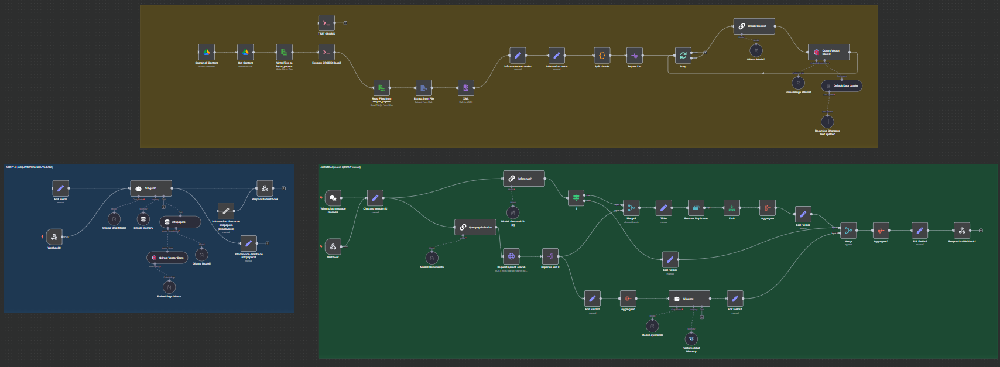
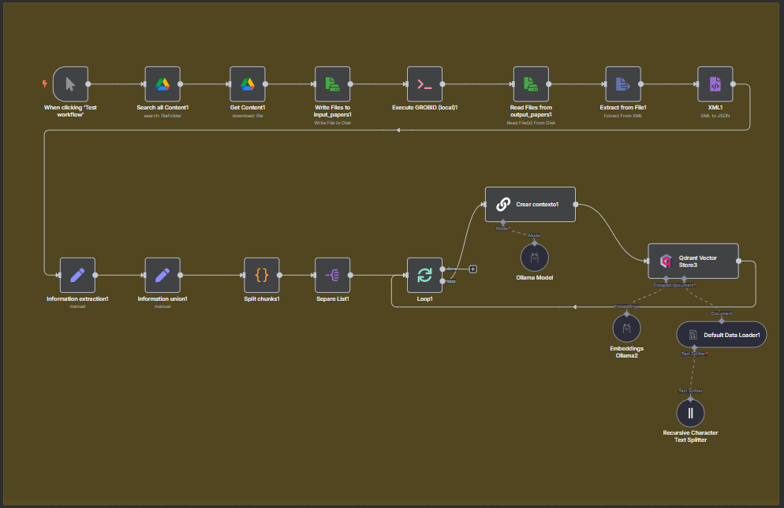
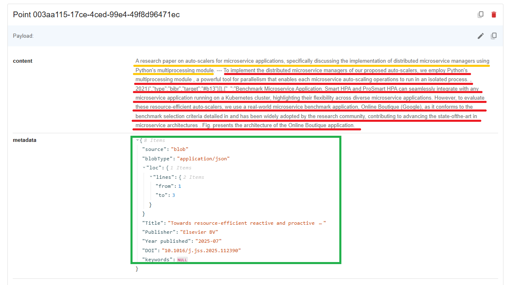
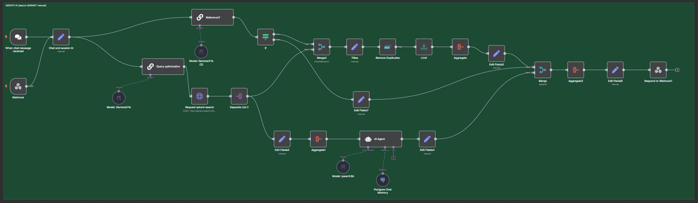
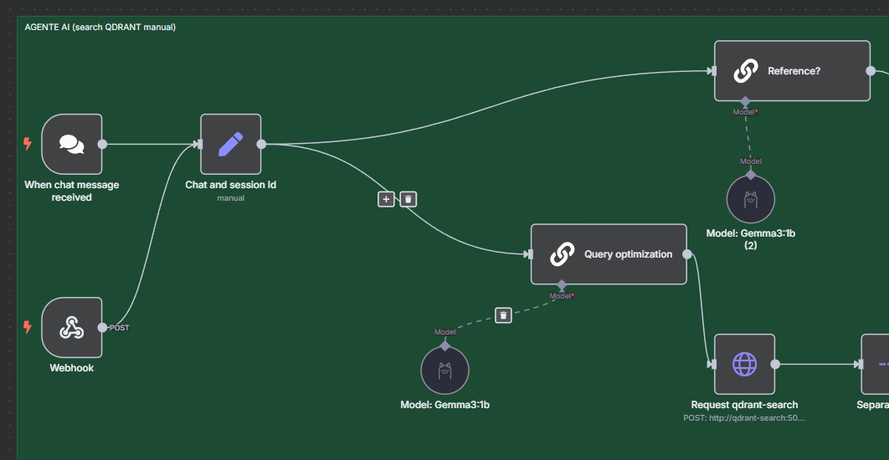
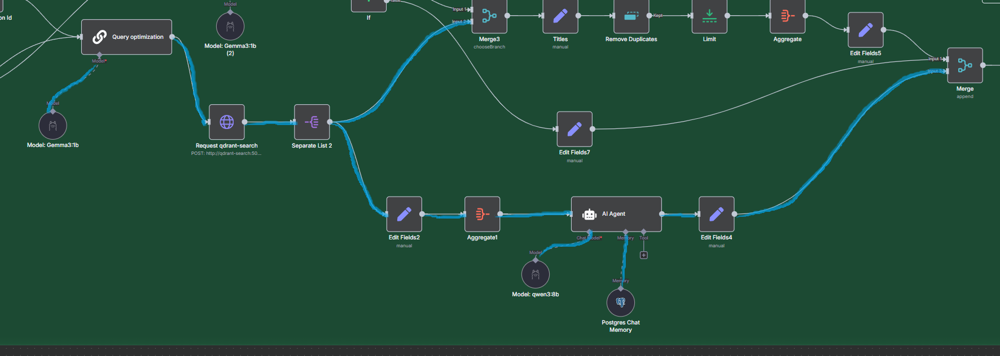
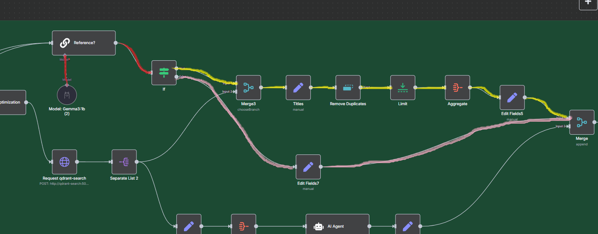
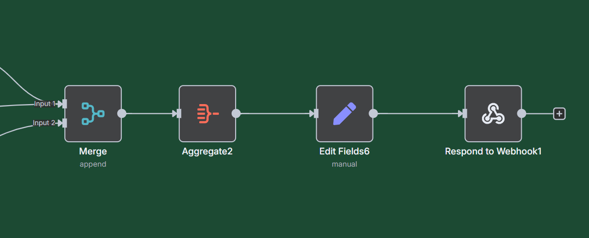

Explicación del Workflow del Proyecto

Figura 1: Workflow Completo
🟡 Procesamiento y Carga de Información |
🔵 Agent AI (primer versión) |
🟢 Agent AI (versión final)
En esta sección se va a explicar el funcionamiento completo del workflow del proyecto. Está estructurado en dos grandes secciones principales: la preparación de la base de datos (bloque amarillo) donde se almacena toda la información extraída de los papers, y la implementación del agente que realiza las búsquedas. Se presentan dos tipos de agentes: el bloque azul representa una primera versión que actualmente no funciona correctamente, aunque podría ser funcional con futuras actualizaciones. Para más información sobre esta problemática, se puede consultar la documentación en esta sección, que ayuda a comprender por qué se desarrolló una alternativa más manual que es la que finalmente se utiliza en el proyecto (bloque verde).
Procesamiento y Carga de Información

Figura 2: Workflow de Procesamiento y Carga de Información
El flujo comienza con el nodo When clicking 'Test workflow' que actúa como disparador/trigger del workflow. Desde allí, el proceso continúa hacia el nodo Search all Content donde se debe seleccionar manualmente la carpeta donde se realizará la búsqueda. Este nodo genera como salida un listado completo de todos los elementos contenidos en la carpeta de Drive.
Posteriormente, el flujo pasa al nodo Get Content que se encarga de descargar los archivos. Para procesar todos los archivos listados anteriormente, se configura con un identificador "{{ $json.id }}" que varía iterativamente hasta cubrir todos los elementos listados y los descarga.
A continuación, el proceso continúa hacia el nodo Write Files to input_papers. El objetivo es transferir todos los archivos descargados desde n8n para poder procesarlos con GROBID de manera local. Existe una carpeta compartida entre el contenedor y la PC local, definida en el docker-compose:
volumes:
- ./shared:/data/shared
Por lo tanto, todos los archivos se descargan en el directorio '/data/shared/input_papers/{{ $json.name }}'.
Luego, el nodo Execute GROBID (local) ejecuta el comando 'python3 /data/shared/cliente_grobid.py', que convierte todos los archivos PDF a formato XML y los ubica en la carpeta 'output_papers'. Una vez completado el procesamiento, el flujo continúa hacia Read Files from output_papers.
Después, el proceso pasa al nodo Extract from XML que está configurado para extraer campos comunes de todos los papers y convertirlos a formato JSON. Al estar bien estructurado gracias a la implementación de GROBID, permite visualizar toda la estructura que mantienen los papers. Luego se realiza un proceso de formateo en el nodo Information extraction donde se mapean las variables que se utilizarán para cargar en la base de datos, incluyendo información importante y metadata útil. Las variables extraídas son:
- title (metadata)
- abstract (metadata)
- publisher (metadata)
- year published (metadata)
- DOI (metadata)
- keywords (metadata)
- BODY_div (campo que contiene la información principal)
- BODY_fig (información de todas las figuras y sus descripciones)
A continuación, el flujo continúa hacia el nodo Information union que combina los dos campos mencionados anteriormente en un solo lugar, uniendo BODY_div con BODY_fig para formar INFO_BODY.
Posteriormente, el proceso pasa al nodo Split Chunks, que consiste en un código JavaScript que divide un texto extenso en fragmentos (chunks) más pequeños, respetando los límites de las oraciones para mantener la coherencia del contenido.
Luego, el nodo Separe List se encarga únicamente de separar una lista en varios elementos individuales. Finalmente, se ingresa a la sección final de este proceso, donde se encuentra un nodo Loop que permite iterar sobre todos los elementos, procesando 5 chunks a la vez. El flujo continúa hacia Create context, que es un nodo básico de LLM conectado a un modelo de Ollama (en este caso "llama3.1:8b"). En este proceso (como se explicó en Contextual RAG), se proporciona el documento completo "INFO_BODY" para generar un contexto específico para cada chunk basado en dicho documento.
Una vez obtenido el contexto junto con el chunk original, ambos se cargan en la base de datos mediante el nodo Qdrant Vector Store, que está conectado a otros dos nodos: Embeddings Ollama, donde se define un modelo de Embedding (en este caso "nomic-embed-text"). Es importante destacar que se debe utilizar este mismo modelo al realizar búsquedas posteriores en la base de datos. El segundo nodo conectado es Default Data Loader, donde se especifica cómo se cargará la información en la base de datos (incluyendo la metadata en este punto). También tiene configurado un text splitter sin overlap, con una distancia de 5000 chunks size. Dado que anteriormente se realizó un split manual con un tamaño de 1000 al cargar en la base de datos (sumado a un contexto no muy extenso), nunca se alcanza los 5000, por lo que no se realiza un split adicional en esta zona, que es el comportamiento deseado. Finalmente, este proceso se repite en loop hasta completar todos los chunks.
Una vez completado todo el proceso de procesamiento y carga, es posible verificar que los datos se han almacenado correctamente en la base de datos vectorial. Para ello, se puede acceder al panel de administración de Qdrant a través de la siguiente URL:
http://localhost:6333/dashboard#/collections/
Al seleccionar la colección creada, se podrá visualizar la estructura de los datos almacenados, como se muestra en la siguiente imagen:

Figura 3: Estructura de datos en Qdrant Vector Store
En la visualización de Qdrant se pueden identificar tres componentes principales:
- 🔴 Chunk (Rojo): Contiene el fragmento original del documento extraído durante el proceso de chunking
- 🟡 Contexto (Amarillo): Representa el contexto generado por el modelo LLM que sitúa el chunk dentro del documento completo
- 🟢 Metadata (Verde): Incluye toda la información descriptiva del documento como título, abstract, DOI, keywords, año de publicación, etc.
Esta estructura permite que el sistema de búsqueda semántica pueda recuperar no solo el contenido relevante, sino también el contexto que lo hace comprensible y la metadata que facilita la identificación del documento fuente.
Agent AI

Figura 4: Workflow completo del Agent AI
En esta sección se explica el funcionamiento del Agente de Inteligencia Artificial. El sistema ofrece dos formas de interactuar con el agente:
Puntos de Entrada
- When chat message received: Nodo nativo de n8n que permite interactuar con el agente directamente desde la interfaz de n8n para realizar pruebas de manera rápida.
- Webhook: Nodo que espera solicitudes mediante método POST para ser utilizado con OpenWebUI como interfaz final para el usuario.

Figura 5: Puntos de entrada del Agent AI
Ambos nodos se conectan al nodo Chat and session Id, que realiza un mapeo de variables para estandarizar la entrada, asegurando que los nodos posteriores (Reference? y Query optimization) reciban el mismo formato de datos independientemente del origen.
Procesamiento y respuesta de consultas
El flujo se divide en dos ramas principales donde primero se ejecuta la Rama 1 y luego la Rama 2 y finalmente ambas rambas convergen en una para poder brindar la respuesta final:
Rama 1: Optimización -> Búsqueda -> Respuesta

Figura 6: Rama 1 "Optimización, Búsqueda, Respuesta"
-
Query Optimization: Utiliza un modelo de bajo procesamiento (gemma3:1b) para optimizar, limpiar y extraer solo la información esencial de la consulta del usuario para realizar búsquedas más precisas en la base de datos.
-
Request qdrant-search: Se conecta al servicio qdrant-search (especificado en el Docker Compose) que escucha en el puerto 5000. Este servicio maneja las consultas a la base de datos vectorial. La configuración de la colección específica se encuentra en el cliente Python (insertar link). El cliente define:
- Cantidad de resultados: 20 mejores coincidencias
- Modelo de embedding: Debe coincidir con el utilizado durante la carga de datos
-
Separate List 2: Procesa la respuesta única de la base de datos (formato JSON) y la separa en 20 objetos JSON individuales, cada uno conteniendo un chunk con su metadata correspondiente.
-
Edit Fields2: Realiza un mapeo de variables para preparar los datos.
-
Aggregate1: Combina toda la información que se proporcionará como entrada al AI Agent.
-
AI Agent: Utiliza el modelo "qwen3:8b" para generar una respuesta basada en:
- La consulta original del usuario
- La información recuperada de la base de datos
- El contexto de la conversación almacenado en "PostgreSQL Chat Memory"
-
PostgreSQL Chat Memory: Almacena automáticamente el historial de conversación, identificando usuarios por SessionID.
-
Merge: Espera a que ambas ramas (Rama 1 y 2) estén completas antes de continuar.
Rama 2: Detección de Referencias

Figura 7: Rama 2 "Detección y Procesamiento de Referencias"
-
Reference?: Utiliza el modelo "gemma3:1b" para determinar si el usuario solicitó referencias de papers. Devuelve:
1: Si el usuario pidió referencias0: Si el usuario no pidió referencias
-
If: Nodo condicional que evalúa la respuesta del nodo anterior.
Si la respuesta es 0 (no se pidieron referencias, camino rosa), el flujo pasa directamente al nodo Merge.
Si la respuesta es 1 (se pidieron referencias, camino amarillo), el flujo continúa por:
-
Merge3: Combina la respuesta de la base de datos con el valor de referencia.
-
Titles: Extrae los títulos de los papers de las 20 mejores coincidencias (ordenadas por puntaje de similitud).
-
Remove Duplicates: Elimina títulos duplicados, ya que es común que múltiples chunks del mismo paper aparezcan en los resultados.
-
Limit: Limita la cantidad de referencias (configurado en 3 títulos máximo).
-
Aggregate: Combina los títulos únicos en un solo objeto JSON.
-
Edit Fields5: Realiza el mapeo final de variables para las referencias.
-
Merge: Espera a que ambas ramas (Rama 1 y 2) estén completas antes de continuar.
Etapa Final: Unión de ramas

Figura 8: Unión de ramas, respuesta final
-
Merge: Espera a que ambas ramas (respuesta principal y referencias) estén completas antes de continuar.
-
Aggregate2: Combina la respuesta del agente con las referencias (si las hay).
-
Edit Fields6: Realiza el mapeo final y define el formato de salida, incluyendo la presentación condicional de referencias.
-
Respond to Webhook1: Devuelve la respuesta final al punto de entrada correspondiente.